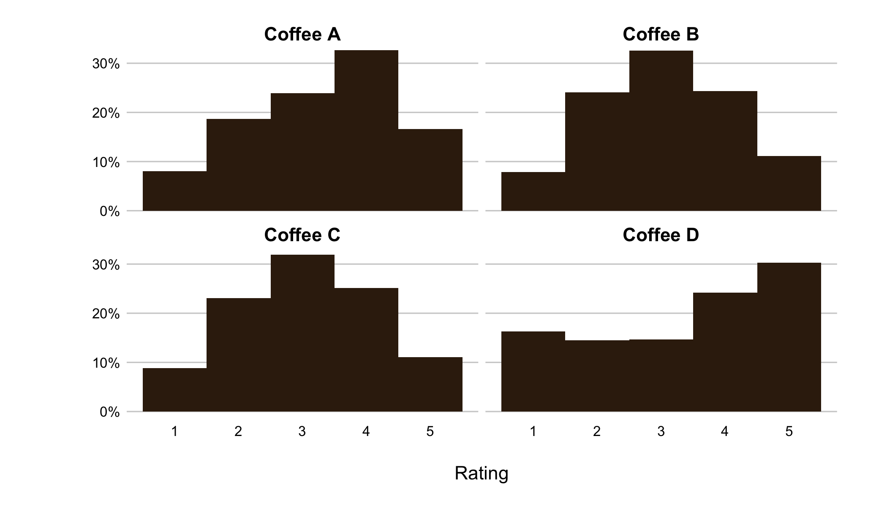
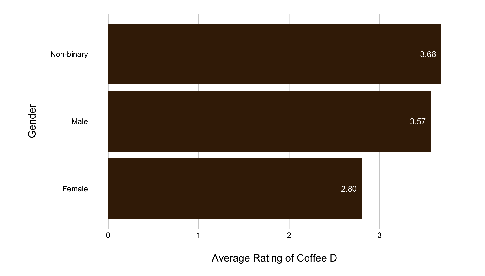
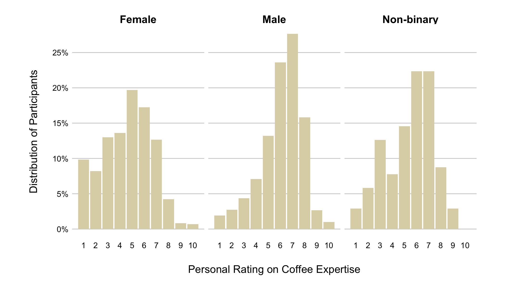
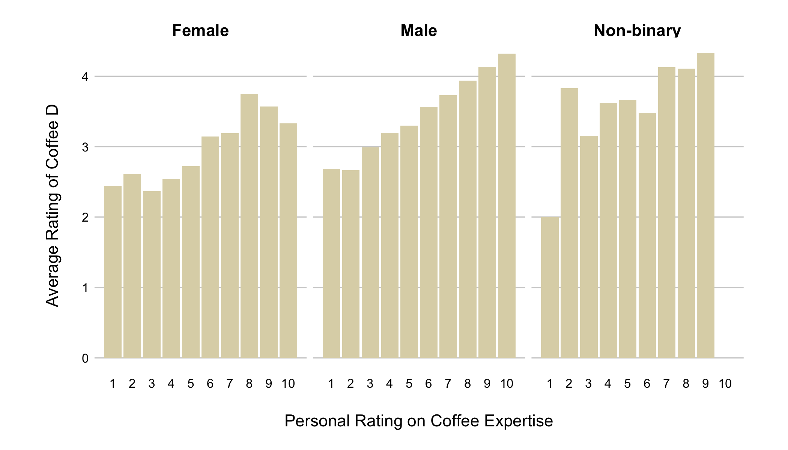
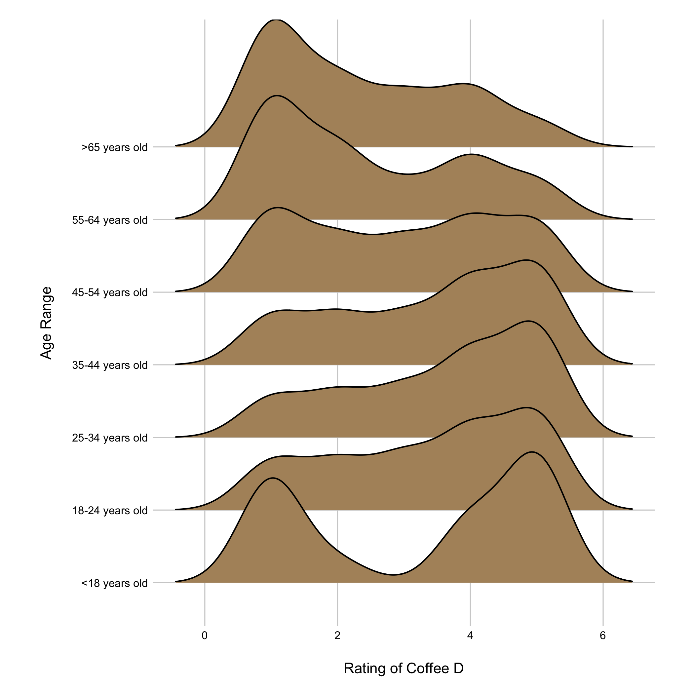

The Great American Coffee Survey Analysis
What do Americans think about artisanal, fermented coffee?
James Hoffman, a YouTube creator, recently released anonymized results of what he calls the “Great American Taste Test.”
The survey aimed to study which roast levels and flavor profiles groups prefer based on demographic attributes and coffee habits. Because of the types of coffees and the data collected on respondents, the survey gives an interesting look into how taste is shaped by more than just preference.
The taste test involved sending 5,000 people a shipment of four different coffee blends. Coffees A, B and C followed a typical range of roast levels from light to dark. Coffee D was an experimentally roasted coffee that was fermented during its processing. The survey asked participants to rate each coffee individually on a scale from one to five with five being the most favorable.

Coffee D represents the most significant departure from a typical coffee profile and shows the largest skew in rating variation. The rating of coffee D also varies the most for differing demographic groups, which makes it a possible indicator to judge experimental taste preferences.
One of the most striking contrasts in the average rating of the fermented coffee was by gender. Those identifying as female rated this coffee nearly 20 percent lower than their male or non-binary counterparts. A possible factor affecting this may be material differences in how genders perceive taste. Women were also less well-represented in the survey. Of around 4,000 responses, less than 1,000 were female, possibly skewing the results.
A 2000 article in the Journal of the American Dietetic Association Studies found differences in how women "supertasters" (usually measured as sensitivity to certain bitter flavors) could have different taste preferences to genetic variation. Hoffman’s survey shows that fermented flavors could be demonstrating a similar effect.

Another influence on the difference in ratings across coffee types is respondents' self-reported expertise level. Many Hoffman viewers view coffee brewing and tasting as a hobby and enjoy exploring new flavor profiles, which may lead to an outsized preference for less traditional flavors.
In participants’ ratings of their perceived coffee expertise, gender again showed stark disparities. On a scale from one to ten, male respondents skewed heavily toward ratings of six to eight. Female respondents rated themselves across a wider range, though lower on average.

In accounting for both gender and personal rating of expertise, though, female respondents still rated coffee D lower than male respondents at every expertise level.
If more advanced coffee tasters preferred coffee D similarly across genders, it would indicate gender did not have an effect. Instead, male respondents also showed a strong trend of preferring coffee D as their expertise level increased. The female distribution of coffee D ratings is flatter and less extreme but still positive as coffee expertise increases. Interestingly, while non-binary survey respondents had a relatively equal spread of perceived skill level, with most rating themselves 5-7, the ratings for coffee D are relatively high and nearly identical across all expertise levels.

Another demographic showing distinctions in ratings of the fermented coffee is older respondents. It is again important to note that a small proportion of respondents are above 65 (95 surveyed) or below 18 (21 surveyed). A continuous shift occurs in ratings by age group, with younger respondents rating coffee D high and preferences for the coffee peaking for 35 - 44-year-olds. For those 45-55 years old, the number of respondents rating the coffee as less desirable increases. Those older than 55 continue to shift their ratings toward one.
Studies also found that as age increases, taste changes with it. Younger people may more acutely judge sour and bitter flavors, affecting how they experience an acidic light roast like coffee D.

While gender had substantial differences in the distribution of perceived skill level, each age group had similar ratings for expertise. The preference shift for coffee D could instead also be attributed to the relatively recent popularization of experimental coffees. Older age groups rated dark-roasted coffee as the one they preferred most, and dark-roast was the standard coffee flavor profile until the 2000s. The “third wave” of coffee has given rise to more lightly roasted and higher quality beans, often to generations discovering younger coffee for the first time.
The survey was mostly made up of viewers from Hoffman’s channel and likely did not reflect the coffee preferences of the general public. Even still, the survey is unusually large for coffee-tasting data of this kind. Hoffman uses the National Coffee Association seasonal preference survey as a comparison: it had less than 2,000 responses, whereas this dataset has more than 4,000. Studies of this kind are still small in scale and often have insignificant or conflicting results. Still, demographic information from this specialized audience demonstrates how personal attributes may connect to coffee preferences more than expected.